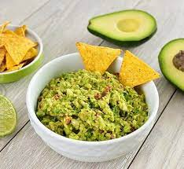

Guacamole

Description
Guacamole is an avocado-based dip or spread that originated in Mexico. It's typically made with mashed avocado and lime juice, then seasoned with salt and cilantro. Guacamole often contains tomatoes and onions.
Ingredients
- 3 avocados - peeled, pitted, and mashed.
- 1 lime, juiced
- Salt: A teaspoon of salt enhances the flavors of the other ingredients.
- Vegetables: You'll also need an onion and roma tomatoes.
- Herbs and spices: Fresh cilantro, minced garlic, and cayenne pepper add tons of flavor.
Steps
- Mash avocados, lime juice, and salt together in a medium bowl; mix in tomatoes, onion, cilantro, and garlic. Stir in cayenne pepper.
- Serve immediately, or cover and refrigerate for 1 hour for improved flavor.